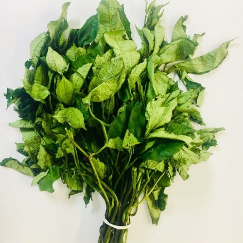
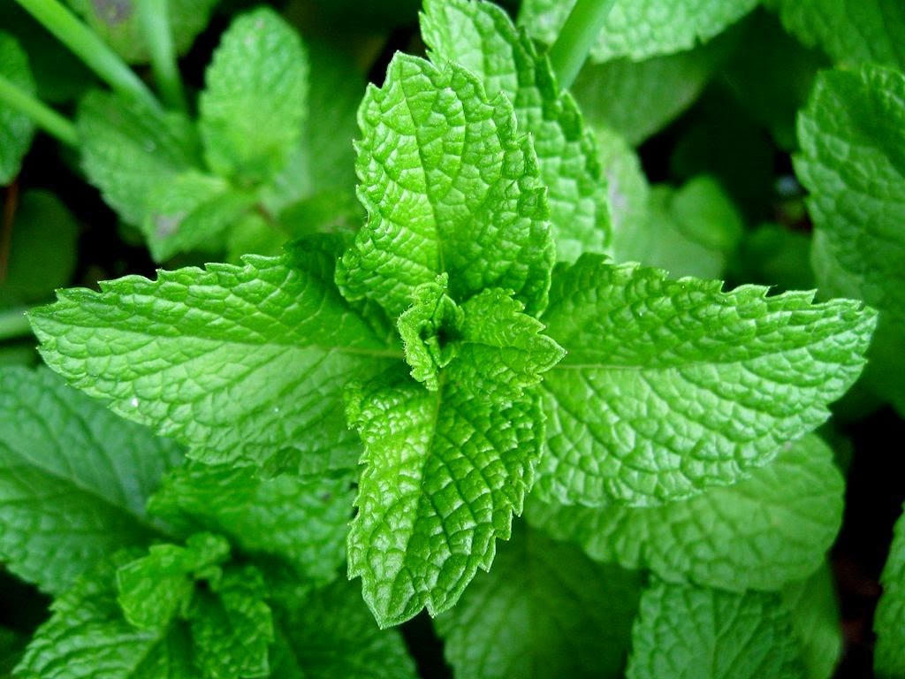

These are some of the best leaves that you can find in West Africa if not Sub-Saharan Africa.
They are not only rich in nutrients and healthy but very tasty.
They're used in african cuisine for home cooked meals and also in restuarants all over. It takes between two to three months to grow them completely especially during raining season as they tend to grow quicker when its wet as some of their seeds store lots of water to grow.
This leaf comes after a while and is known for the large shell that comes along with it's seed.

 This one is called scent leaf because it has a nice aroma/scent. it is not only tasty but it has a nice smell to it. You can read more about these vegetables and more here